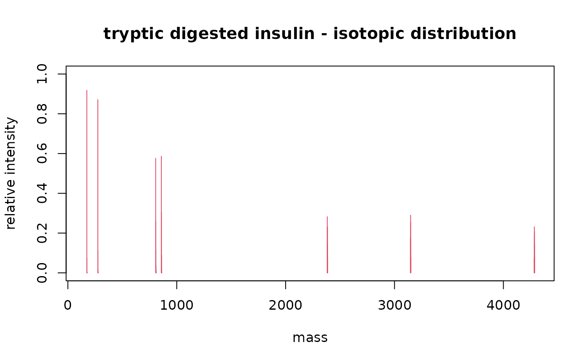

vignettes/cleaver.Rmd
cleaver.RmdAbstract
This vignette describes the in-silico cleavage of polypeptides using thecleaver package.
Most proteomics experiments need protein (peptide) separation and cleavage procedures before these molecules could be analyzed or identified by mass spectrometry or other analytical tools.
cleaver allows in-silico cleavage of polypeptide sequences to e.g. create theoretical mass spectrometry data.
The cleavage rules are taken from the ExPASy PeptideCutter tool (Gasteiger et al. 2005).
Loading the cleaver package:
Getting help and list all available cleavage rules:
Cleaving of Gastric juice peptide 1 (P01358) using Trypsin:
## $LAAGKVEDSD
## [1] "LAAGK" "VEDSD"## $LAAGKVEDSD
## start end
## [1,] 1 5
## [2,] 6 10## $LAAGKVEDSD
## [1] 5Sometimes cleavage is not perfect and the enzym miss some cleavage positions:
## $LAAGKVEDSD
## [1] "LAAGKVEDSD"## $LAAGKVEDSD
## start end
## [1,] 1 10## $LAAGKVEDSD
## [1] "LAAGK" "VEDSD" "LAAGKVEDSD"## $LAAGKVEDSD
## start end
## [1,] 1 5
## [2,] 6 10
## [3,] 1 10Combine cleaver and Biostrings (Pages et al., n.d.):
## create AAStringSet object
p <- AAStringSet(c(gaju="LAAGKVEDSD", pnm="AGEPKLDAGV"))
## cleave it
cleave(p, enzym="trypsin")## AAStringSetList of length 2
## [["gaju"]] LAAGK VEDSD
## [["pnm"]] AGEPK LDAGV## IRangesList of length 2
## $gaju
## IRanges object with 2 ranges and 0 metadata columns:
## start end width
## <integer> <integer> <integer>
## [1] 1 5 5
## [2] 6 10 5
##
## $pnm
## IRanges object with 2 ranges and 0 metadata columns:
## start end width
## <integer> <integer> <integer>
## [1] 1 5 5
## [2] 6 10 5## $gaju
## [1] 5
##
## $pnm
## [1] 5Downloading Insulin (P01308) and Somatostatin (P61278) sequences from the UniProt(The UniProt Consortium 2012) database using UniProt.ws (Carlson, n.d.).
## load UniProt.ws library
library("UniProt.ws")
## select species Homo sapiens
UniProt.ws <- UniProt.ws(taxId=9606)
## download sequences of Insulin/Somatostatin
s <- select(UniProt.ws, keys=c("P01308", "P61278"), columns=c("SEQUENCE"))## Getting extra data for P01308, P61278## 'select()' returned 1:1 mapping between keys and columns## fetch only sequences
sequences <- setNames(s$SEQUENCE, s$UNIPROTKB)
## remove whitespaces
sequences <- gsub(pattern="[[:space:]]", replacement="", x=sequences)Cleaving using Pepsin:
## $P01308
## [1] "MA" "L" "W"
## [4] "MRLLP" "LL" "A"
## [7] "WGPDPAAA" "F" "VNQH"
## [10] "CGSH" "VEA" "Y"
## [13] "VCGERG" "FF" "YTPKTRREAED"
## [16] "QVGQVE" "GGGPGAGS" "LQP"
## [19] "LA" "EGS" "QKRGIVEQCCTSICS"
## [22] "Q" "EN" "CN"
##
## $P61278
## [1] "ML" "SCRL"
## [3] "QCA" "L"
## [5] "AA" "SIV"
## [7] "A" "GCVTGAPSDPRL"
## [9] "RQ" "FL"
## [11] "QKS" "LAAAAGKQEL"
## [13] "AK" "Y"
## [15] "AE" "SEPNQTENDA"
## [17] "LEPED" "SQAAEQDEMRL"
## [19] "EL" "QRSANSNPAMAPRERKAGCKN"
## [21] "FF" "W"
## [23] "KT" "FTSC"A common use case of in-silico cleavage is the calculation of the isotopic distribution of peptides (which were enzymatic digested in the in-vitro experimental workflow). Here BRAIN (Claesen et al. 2012; Dittwald et al. 2013) is used to calculate the isotopic distribution of cleaver’s output. (please note: it is only a toy example, e.g. the relation of intensity values between peptides isn’t correct).
## load BRAIN library
library("BRAIN")
## cleave insulin
cleavedInsulin <- cleave(sequences[1], enzym="trypsin")[[1]]
## create empty plot area
plot(NA, xlim=c(150, 4300), ylim=c(0, 1),
xlab="mass", ylab="relative intensity",
main="tryptic digested insulin - isotopic distribution")
## loop through peptides
for (i in seq(along=cleavedInsulin)) {
## count C, H, N, O, S atoms in current peptide
atoms <- BRAIN::getAtomsFromSeq(cleavedInsulin[[i]])
## calculate isotopic distribution
d <- useBRAIN(atoms)
## draw peaks
lines(d$masses, d$isoDistr, type="h", col=2)
}
## R Under development (unstable) (2019-01-01 r75939)
## Platform: x86_64-pc-linux-gnu (64-bit)
## Running under: Ubuntu 14.04.5 LTS
##
## Matrix products: default
## BLAS: /home/travis/R-bin/lib/R/lib/libRblas.so
## LAPACK: /home/travis/R-bin/lib/R/lib/libRlapack.so
##
## locale:
## [1] LC_CTYPE=en_US.UTF-8 LC_NUMERIC=C
## [3] LC_TIME=en_US.UTF-8 LC_COLLATE=en_US.UTF-8
## [5] LC_MONETARY=en_US.UTF-8 LC_MESSAGES=en_US.UTF-8
## [7] LC_PAPER=en_US.UTF-8 LC_NAME=C
## [9] LC_ADDRESS=C LC_TELEPHONE=C
## [11] LC_MEASUREMENT=en_US.UTF-8 LC_IDENTIFICATION=C
##
## attached base packages:
## [1] stats4 parallel stats graphics grDevices utils datasets
## [8] methods base
##
## other attached packages:
## [1] BRAIN_1.29.0 lattice_0.20-38 PolynomF_1.0-2
## [4] UniProt.ws_2.23.0 RCurl_1.95-4.11 bitops_1.0-6
## [7] RSQLite_2.1.1 cleaver_1.21.4 Biostrings_2.51.1
## [10] XVector_0.23.0 IRanges_2.17.3 S4Vectors_0.21.8
## [13] BiocGenerics_0.29.1 BiocStyle_2.11.0
##
## loaded via a namespace (and not attached):
## [1] tidyselect_0.2.5 xfun_0.4 purrr_0.2.5
## [4] htmltools_0.3.6 BiocFileCache_1.7.0 yaml_2.2.0
## [7] blob_1.1.1 rlang_0.3.0.1 pkgdown_1.3.0
## [10] pillar_1.3.1 glue_1.3.0 DBI_1.0.0
## [13] rappdirs_0.3.1 bit64_0.9-7 dbplyr_1.2.2
## [16] bindrcpp_0.2.2 bindr_0.1.1 stringr_1.3.1
## [19] zlibbioc_1.29.0 commonmark_1.7 memoise_1.1.0
## [22] evaluate_0.12 Biobase_2.43.0 knitr_1.21
## [25] curl_3.2 AnnotationDbi_1.45.0 Rcpp_1.0.0
## [28] backports_1.1.2 BiocManager_1.30.4 desc_1.2.0
## [31] fs_1.2.6 bit_1.1-14 digest_0.6.18
## [34] stringi_1.2.4 bookdown_0.9 dplyr_0.7.8
## [37] grid_3.6.0 rprojroot_1.3-2 tools_3.6.0
## [40] magrittr_1.5 tibble_1.4.2 crayon_1.3.4
## [43] pkgconfig_2.0.2 MASS_7.3-51.1 xml2_1.2.0
## [46] assertthat_0.2.0 rmarkdown_1.11 roxygen2_6.1.1
## [49] httr_1.4.0 R6_2.3.0 compiler_3.6.0Carlson, Marc. n.d. UniProt.ws: R Interface to Uniprot Web Services.
Claesen, Jürgen, Piotr Dittwald, Tomasz Burzykowski, and Dirk Valkenborg. 2012. “An Efficient Method to Calculate the Aggregated Isotopic Distribution and Exact Center-Masses.” Journal of the American Society for Mass Spectrometry 23 (4). Springer: 753–63.
Dittwald, Piotr, Jürgen Claesen, Tomasz Burzykowski, Dirk Valkenborg, and Anna Gambin. 2013. “BRAIN: A Universal Tool for High-Throughput Calculations of the Isotopic Distribution for Mass Spectrometry.” Analytical Chemistry 85 (4). ACS Publications: 1991–4.
Gasteiger, Elisabeth, Christine Hoogland, Alexandre Gattiker, S’everine Duvaud, Marc R. Wilkins, Ron D. Appel, and Amos Bairoch. 2005. “Protein Identification and Analysis Tools on the Expasy Server.” In The Proteomics Protocols Handbook, edited by John M. Walker, 571–607. Humana Press. https://doi.org/10.1385/1-59259-890-0:571.
Pages, H., P. Aboyoun, R. Gentleman, and S. DebRoy. n.d. Biostrings: String Objects Representing Biological Sequences, and Matching Algorithms.
The UniProt Consortium. 2012. “Reorganizing the Protein Space at the Universal Protein Resource (Uniprot).” Nucleic Acids Research 40 (D1): D71–D75. https://doi.org/10.1093/nar/gkr981.